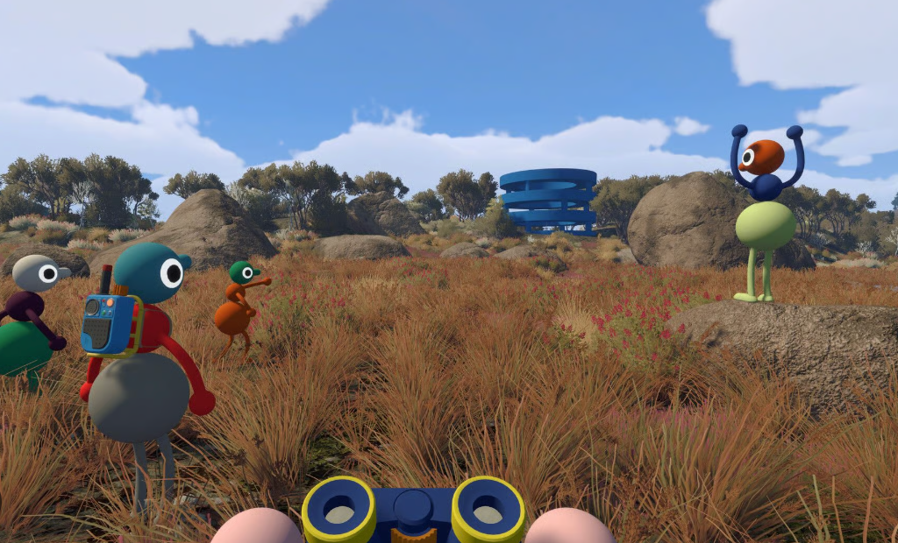

Quick answer: The official storefront is the source of truth for minimum and recommended PC/Mac specifications. Review it again after major patches or driver changes.

Community gameplay screenshot supplied by the site owner. This independent guide is not affiliated with House House or Panic.
Where to check
- Open the Big Walk Steam store page and review the system-requirements section.
- Compare your operating system, processor, graphics hardware, memory and storage against the listed requirements.
- Mac users should check whether they are using Steam or the Mac App Store edition.
Before a group session
- Install the latest available game update.
- Test controller, keyboard, microphone and headphones before inviting friends.
- Close background downloads if the host connection is unstable.
Common setup checks
- Use the in-game audio settings to confirm microphone activity.
- If joining fails, confirm the host is loaded into the session and device clocks are correct.
- Check platform and crossplay guidance before blaming hardware.
Official sources
Release, platform, player-count, hosting and crossplay facts are checked against the official Big Walk FAQ and the official Steam page. Last checked August 27, 2026.
Related guides
Steam guide · Crossplay guide · Multiplayer guide · Beginner FAQ